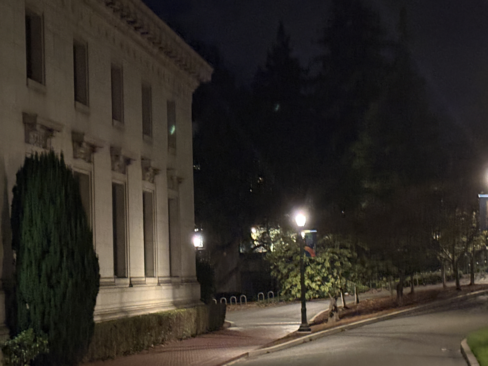
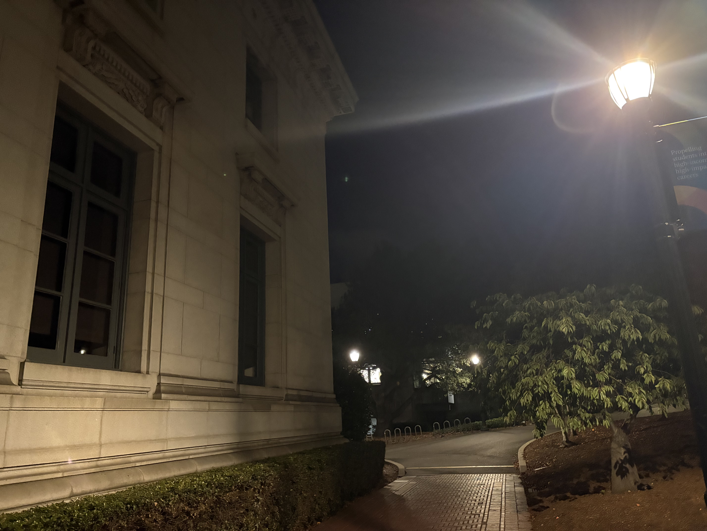
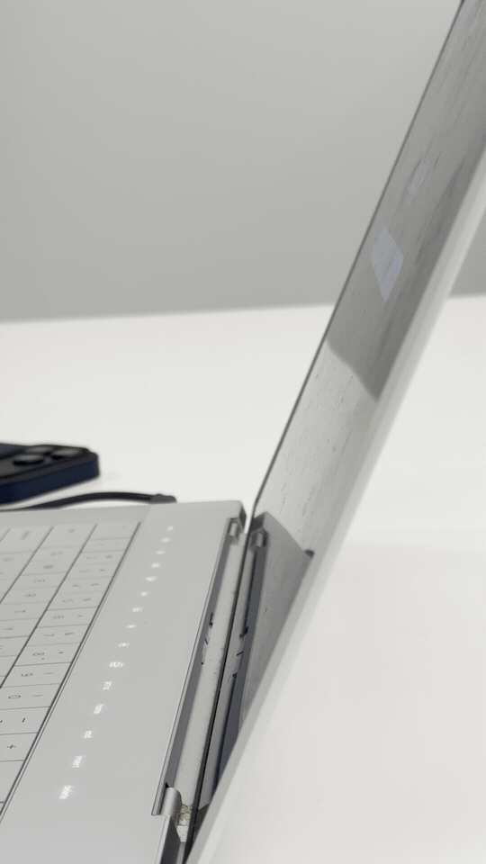

Selfie: The Wrong Way vs. The Right Way
Being farther away is akin to an orthographic projection - less distortion due to perspective


Three ways distance changes how we see
Being farther away is akin to an orthographic projection - less distortion due to perspective
Having zoomed in photo means physically less pixels for the same amount of space to be photographed


